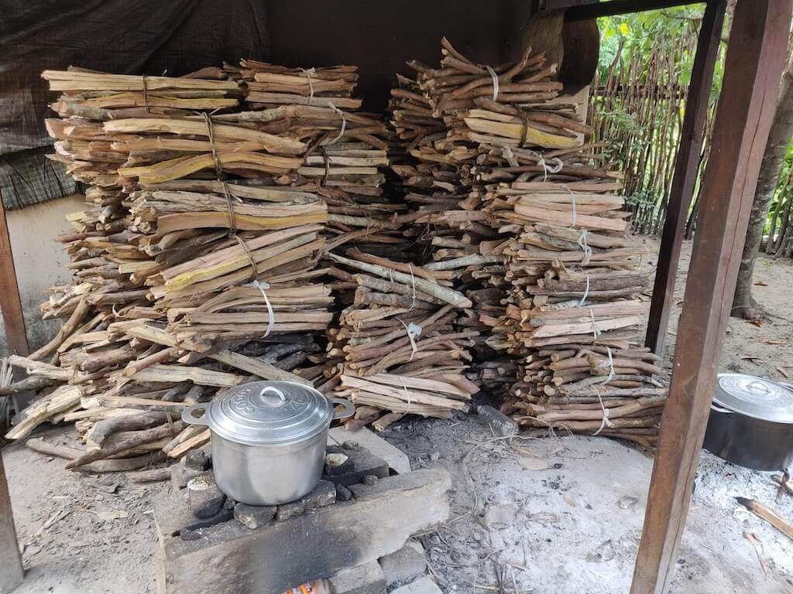

Wood for trees
I was warned about the extensive deforestation occuring in Madagascar, a warning which clashed with my romantic notions of an ecologically-diverse island in tune with its inhabitants.
It wasn't until the brief flight from Johannesburg that I could witness how raw it was. It wasn't until I was on the ground that some of the explanations for this loss of natural habitat became clear.
The local backstory
Mahanoro was probably founded in the thirteenth century, in or near the time the more northern coastal town of Vatomandry was founded.
It took 800 or so years for the descendents of the first Indo-Chinese immigrants to reach places like Mahanoro.
Before that time, Mahanoro, like most of Madagascar was covered in rich forests.
And to a degree, Mahanoro is still on the verges of that original forest. The small sections of indigenous flora are pockmarks on the town's face.
While the soil here is consistent with beach sand, and supplemented by wave-worn graphite, it is surprisingly fertile.
But there's a problem.
The human influence
The Malagasy are comparitively poor to other people of the world, but their environs are surprisingly rich.
The salty waters offer bountiful fish.
The vegetation grows, and is cut back with equal ferocity.
It's difficult and costly to get any form of materials into Mahanoro, so the markets don't have a wide variety of foreign goods, instead they stock local produce and raw materials. Some of these plant-based raw materials come from the outskirts of town where (in the four months I've been here) I've noticed the poorest of the poor trudging back and forth with dizzying amounts of firewood, charcoal, reeds, and other materials strapped to the posts they carry on their burdened shoulders.
The infrastructure too reflects this relationship between the town and it's locally available materials.
Cement is hard to come by, but seemed to be more readily available in the early 20th century, as most of the solid buildings in town look like they were made back then.
As an economic signifier, most homes here are constructed out of wood.
Meals are cooked over wood-fires, or charcoal braziers.
Electricity is not dependable, nor cheap, and the East Coast humidity is a destroyer of anything electronic.
So, there's a never-ending demand for lumber and its by-products.
I imagine this situation is played out all over Madagascar. Natural resources are a means to an end, and since the government doesn't act in a fostering manner, it's up to each and every Malagasy person to look after themselves. At the future cost of all the maladies that deforestation brings.
These maladies are already visible in town.
- The rivers that meander down to the sea here are always coffee-stained. Evidence of top soil erosion, from the elevated lands to the west of town.
- The wildlife is sparse here, especially larger fauna. If there are any present, they're already accustomed to humans, such as sparrows and mice.
Hitting home

Within the school, we consume an incredible amount of hardwood timber. Mamma Onja prepares 3 meals and enough boiled water a day for 24 people. That's a crazy energy requirement.
To reduce this, we're looking at building a more efficient stove, but sourcing the right materials is hard. The cinderblocks crack, and igneous rocks are difficult to shape, let alone find. A reinforced concrete lintel will have to do for now.
Where to from here?
I want to blame colonialism, an ineffective government and its poorly-provided education. But as with most investigations, I rediscover the truth that this is a complicated problem, in this case rooted deep in sociology, culture, economics, politics, and the myopic mindset of humans that first have to fend for themselves, before they can take care of their descendents and surroundings.
This problem can't be magically solved by technology. But maybe it can be corrected by education, and therefore awareness.
Maybe, one day, we will see the trees.